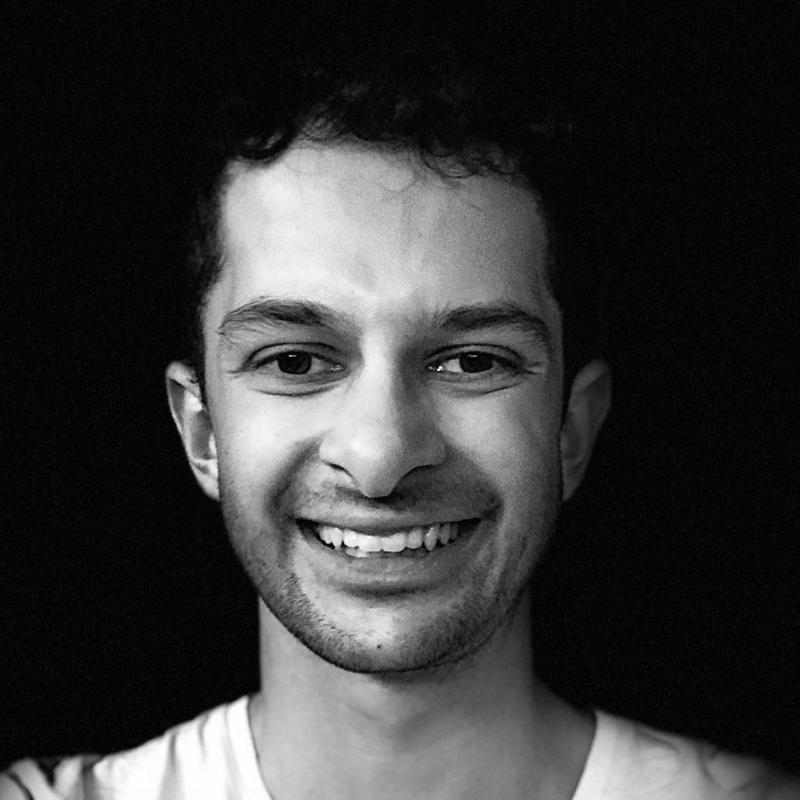

Marcus Ghosh

-
Affiliated (2025-)
Postdoctoral Fellow (2021-2025) - Lab member: 2021-
- Mastodon
- Bluesky
- Google Scholar
- ORCID
- Mentor to: Swathi Anil
Bluesky feed
Marcus Ghosh is an Imperial College Research Fellow, funded by Schmidt Sciences.
In his work he uses artificial neural networks to explore how the brain combines information from multiple senses (multisensory integration). And how the brain's structure enables its function.
Videos
-
Nonlinearity and network topology in multimodal circuitsTalk / 2024
Marcus Ghosh talk at ICNS -
Multimodal units fuse-then-accumulate evidence across channelsTalk / 2023
Talk on multimodal processing given at VVTNS 2023 seminar series
Publications
Note that only publications as part of the Neural Reckoning group are included here (see external publications below for full list).
2025
-
Ghosh M, et al. (2025)
Spiking neural network models of interaural time difference extraction via a massively collaborative process.
eNeuro -
Anil S, Goodman DFM, Ghosh M (2025)
Fusing multisensory signals across channels and time.
PLoS Computational Biology
2024
-
Ghosh M, Béna G, Bormuth V, Goodman DFM (2024)
Nonlinear fusion is optimal for a wide class of multisensory tasks.
PLoS Computational Biology
2022
-
Goodman D, Fiers T, Gao R, Ghosh M, Perez N (2022)
Spiking Neural Network Models in Neuroscience - Cosyne Tutorial 2022.
Zenodo
External publications
This is a short preview of the publications from other sources (ORCID, Semantic Scholar). Note that publications from work done outside the Neural Reckoning group are included in this list.
2025
- Aidan Crilly, et al. (2025)
Ten simple rules for navigating AI in science
PLOS Computational Biology - Swathi Anil, Dan F. M. Goodman, Marcus Ghosh (2025)
Fusing multisensory signals across channels and time
PLOS Computational Biology
2024
- Marcus Ghosh, Gabriel Béna, Volker Bormuth, Dan F. M. Goodman (2024)
Nonlinear fusion is optimal for a wide class of multisensory tasks
PLOS Computational Biology
2023
- Hellen Weinschutz Mendes, et al. (2023)
High-throughput functional analysis of autism genes in zebrafish identifies convergence in dopaminergic and neuroimmune pathways
Cell Reports
2021
2020
- Dale Bryant, et al. (2020)
Diverse species-specific phenotypic consequences of loss of function sorting nexin 14 mutations
Scientific Reports - Marcus Ghosh, Jason Rihel (2020)
Hierarchical Compression Reveals Sub-Second to Day-Long Structure in Larval Zebrafish Behavior
eneuro
2018
- Tim G. Ashlin, Nicholas J. Blunsom, Marcus Ghosh, Shamshad Cockcroft, Jason Rihel (2018)
Pitpnc1a Regulates Zebrafish Sleep and Wake Behavior through Modulation of Insulin-like Growth Factor Signaling.
Cell Reports
2016
- Ellen J. Hoffman, et al. (2016)
Estrogens Suppress a Behavioral Phenotype in Zebrafish Mutants of the Autism Risk Gene, CNTNAP2
Neuron
2015
- Pedro Martin-Cabrera, et al. (2015)
Clinical use of low haemoglobin density, transferrin saturation, bone marrow morphology, Perl's stain and other plasma markers in the identification of treatable anaemia presenting for cardiac surgery in a prospective cohort study
Journal of Clinical Pathology
2014
- Matthew Hung, et al. (2014)
A prospective observational cohort study to identify the causes of anaemia and association with outcome in cardiac surgical patients
Heart